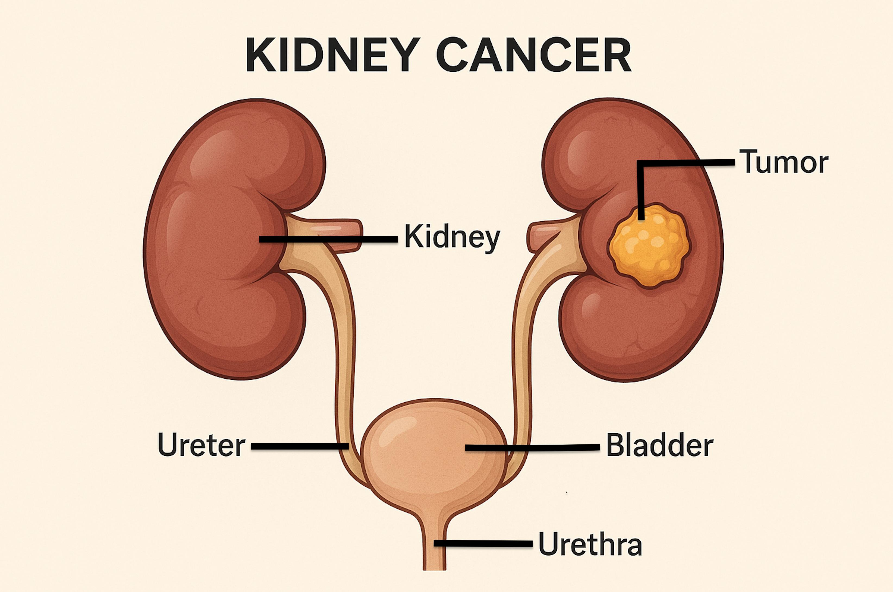

Your kidneys are two bean-shaped organs that help clean your blood and make urine. Kidney cancer occurs when cells in your kidney grow out of control and form a growth called a tumor. Cancer can stop your kidney from working well. It can also spread to other parts of the body and cause problems.
It is upsetting to learn that you or a loved one has cancer. Our care team is here for you each step of the way. Many advances have been made in cancer treatment. We will do all we can to stop the disease.

Often, there is no clear reason why kidney cancer starts. Some things can raise your risk:
Smoking: Smoking harms kidney cells.
Family history: If others in your family had kidney cancer, you may be more likely to have it.
High blood pressure: High blood pressure can damage the kidneys’ blood vessels over time and cause swelling and irritation. All this can make it easier for cancer cells to start growing.
Obesity: Extra weight can change hormone levels in your body.
Kidney disease: Long-term problems with the kidneys or dialysis may raise the risk of cancer.
Chemical exposure: Exposure to certain chemicals raises the risk.
Males and members of some racial groups are also more likely to get kidney cancer.
Some people have no symptoms at first. As the cancer grows, you might notice:
Blood in your urine, giving it a pink or red color
Pain in your side or back that does not go away
A lump in your side or belly
Weight loss without trying
Tiredness that does not improve with rest
A fever that keeps coming back
Some people learn they have kidney cancer when they are getting tests for some other reason. The diagnosis is made using imaging tests, blood and urine tests, and by taking a small sample of the growth to be checked in a lab. This is called a biopsy.
Once cancer is confirmed, you may have a PET scan. A small amount of a radioactive substance called a tracer is given through an IV. Once you absorb the tracer, your whole body is scanned to see if the cancer has spread.
Renal cell carcinoma is the most common type of adult kidney cancer in the U.S. Sometimes, people refer to kidney cancer as “renal cancer.”
Treatment depends on how big the tumor is and if the cancer has spread. You will talk to your care team to understand all your options.
Partial nephrectomy: Only the part of the kidney with cancer is removed.
Radical nephrectomy: The whole kidney is removed. Sometimes, nearby tissues are removed too. You can live a full and normal life with one kidney. Many people do.
Immunotherapy: This boosts your immune system so it can fight the cancer. Immunotherapy can make your immune system take notice of cancer cells and attack them. This treatment is given through an IV or as pills. Not everyone responds the same way.
Chemotherapy: This uses strong medicine to kill cancer cells. It is less common for kidney cancer but may be used if other treatments do not work.
Radiation: Radiation uses high-energy rays to kill cancer cells. It may be used if surgery is not an option or to ease pain.
Take care of yourself while you are treating the cancer.
Eat healthy foods: Fruits, veggies, and lean proteins help your body heal.
Drink water: Being hydrated helps your kidneys work better.
Limit salt: Too much salt can raise blood pressure.
Do not smoke: Smoking can cause cancer to return.
Rest often: Your body needs time to heal.
Manage stress: Talk with someone or try deep breathing.
Follow your medication plan: Take all medicines as told.
Limit alcohol: Too much alcohol can harm your body.
You will need regular checkups, even after treatment.
Your care team will check for:
Signs the cancer is gone
Any changes in your other kidney
How your body is healing
It is OK to feel scared or worried. Many people with kidney cancer live full, happy lives. Talk to your care team about support groups or counseling if you feel sad or overwhelmed. You are not alone.
Call your care team if you have:
New or increasing blood in your urine
Pain in your side, lower back, or belly that gets worse or does not go away
Swelling in your legs or ankles
Trouble urinating or changes in how often you urinate
Fever above 100.4°F or 38°C that does not go away and is not from a cold or flu
Loss of appetite or unexplained weight loss
Feeling very tired or weak for no clear reason
Questions about your medicine, treatment, or new or worsening symptoms
Get help right away if:
You have severe pain in your side, back, or belly that starts suddenly or is much worse than usual.
You have blood in your urine with large clots, or if you cannot urinate at all.
You have a high fever above 103°F or 39.4°C with shaking chills, confusion, or feeling very sick.
You have trouble breathing, chest pain, or you are coughing up blood.
You have severe nausea, or you vomit so much that you cannot eat or drink.
Thank you for trusting us with your care. We are here to support you and want you to feel your best. Contact us with any questions.
IF YOU HAVE A MEDICAL EMERGENCY, CALL 911 OR GO TO THE EMERGENCY ROOM.
The information presented is intended for general information and educational purposes. It is not intended to replace the advice of your health care provider. Contact your health care provider if you believe you have a health problem.
Last updated May 2025
© 2025 Mytonomy, Inc. All rights reserved.